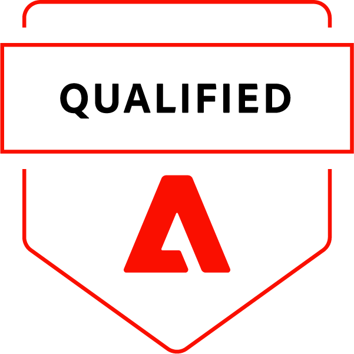
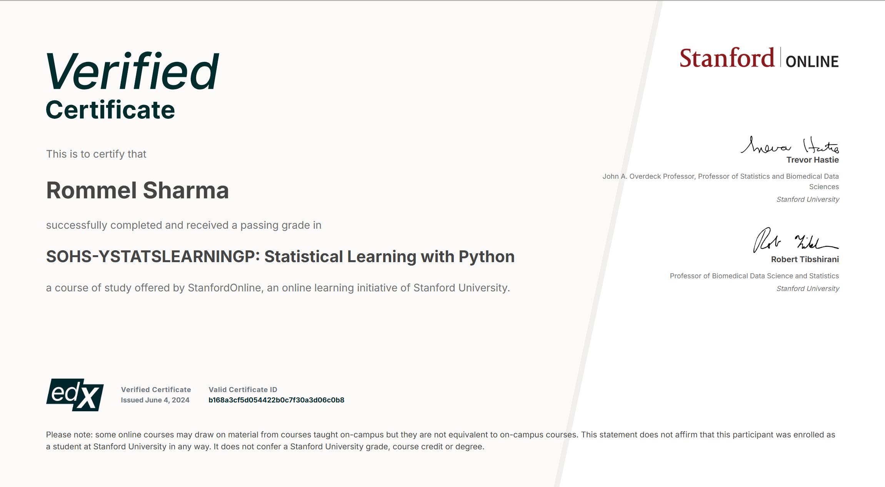
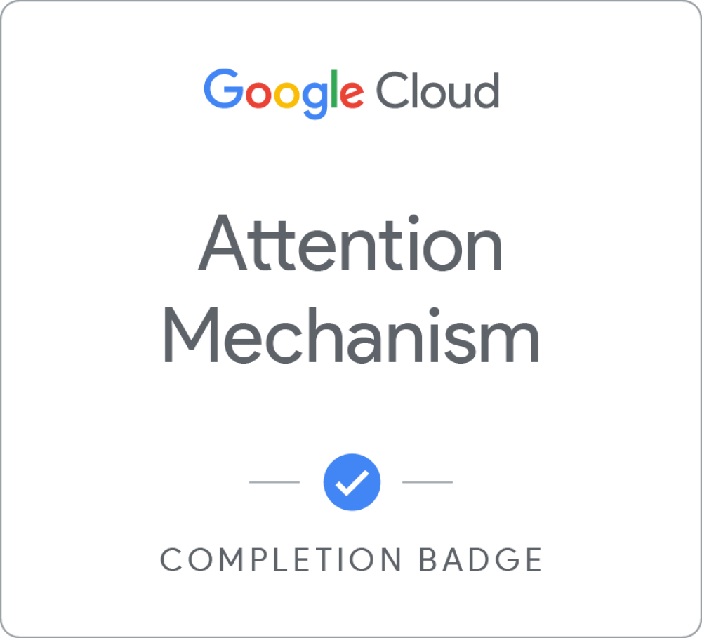
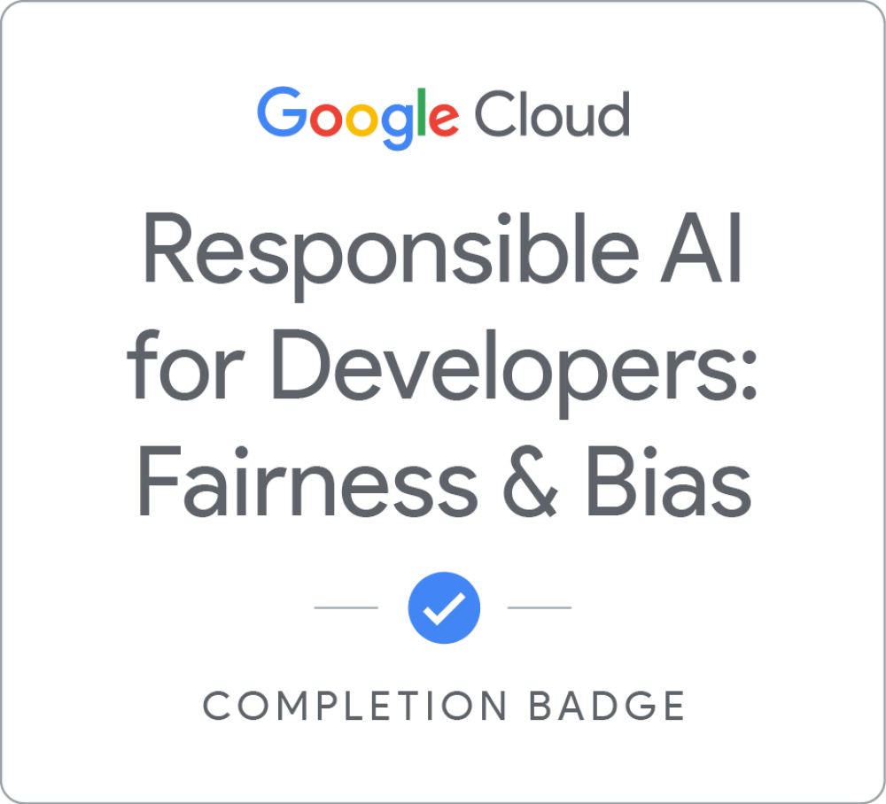

Conservation · Audio ML01
Audio Signatures: Bioacoustics for Wildlife ID
Offline acoustic identification across 234 Pantanal taxa, from sound-event detection to an ONNX inference pipeline.
Independent AI projects · Professional leadership · Sydney
Global technology and commercial leader specializing in enterprise AI solutions, partner ecosystems, and greenfield practice development across NA, EMEA, and APAC. I combine executive GTM and P&L leadership with hands-on engineering depth to turn complex technical architectures into scalable business outcomes. The AI projects featured here are independent personal explorations—not client engagements—where I build and apply my skill on machine learning across various domains like conservation, decision intelligence, generative systems, and quantitative finance.
Selected work
These are independent passion projects pursued outside my professional role—not work delivered for clients or employers. Each page shares the approach, evidence and practical limitations behind the exploration.
Offline acoustic identification across 234 Pantanal taxa, from sound-event detection to an ONNX inference pipeline.
Jaguar re-identification using frozen DINOv2 features and metric learning, achieving 0.950 private mAP on scarce data.
Evidence-grounded recommendations that combine retrieval, behavioral science and traceable source attribution.
A local-first speech system with multilingual voices, zero-shot cloning, SSML control and broadcast-ready output.
A rules-driven equity research screener with sector-aware valuation logic and LLM-assisted thesis validation.
A production-oriented identity-verification pipeline designed around responsive WebRTC streaming and modern embeddings.
Use customer data to identify who is most likely to buy or leave, prioritise audiences and focus limited outreach resources. Learn how AI-powered ranking can inform campaign targeting—and why controlled tests are still needed to measure the extra results a campaign delivers.
Continuous practice
Ongoing learning across AI infrastructure, cloud, model development and responsible deployment supports a practical, research-led approach.

Adobe Qualified — Adobe Experience Platform
Statistical Learning with Python
Attention Mechanism certification
Responsible AI for Developers — Fairness and BiasConnect
For conversations on enterprise AI, applied machine learning and responsible deployment, connect with me on LinkedIn.